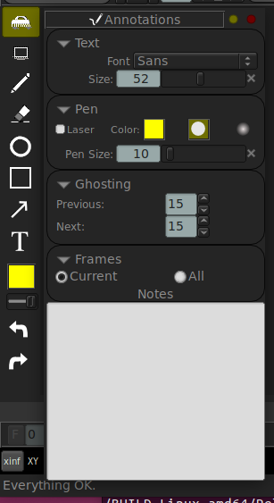

Notas y Anotaciones
Las características de notas de mrv2 proveen una forma rápida y facil de marcar clips con comentarios de texto o dibujos en la pantalla. Esto permite a los usuarios grabar y compartir comentarios visuales con colegas o hacer anotaciones para su propio uso.
Notas pueden ser también útiles como marcadores para fijar un cuadro de interes en un clip.
Agregando una Nota o Dibujo
Hay tres formas de crear una nota en cualquier cuadro de un clip. La nota es siempre agregada al cuadro actual del clip:
Presione las teclas “Ctrl + A”, o seleccione las Anotaciones del menu de Panel o cliqueé dos veces en cualquiera de las herramientas de dibujo.
Con una herramienta de dibujo seleccionada, empiece a dibujar trazos o formas sobre la imagen del visor. Esto automáticamente creará una nota en el cuadro.
Los trazos pueden ser suaves o duros, dependiendo del seteo en el Panel de Anotaciones.
Los dibujos y las notas pueden ser agregados al cuadro dado o a todos los cuadros.
Los dibujos pueden tener fantasmas y el Panel de Anotaciones controla cuantos cuadros de fantasmas ocurren para los cuadros previous y siguientes al cuadro actual de la anotación.
Modificando una Nota
Entre el texto de contenido de sus notas directamente en el Panel de Anotaciones, en la sección de “Notas”. Para borrar una nota, seleccione todo el texto y presione Borrar (Delete or Backspace). Para modificar un dibujo, dispone de las flechas de Deshacer (Undo) y Rehacer (Redo). Tambien puede usar la goma de borrar para borrar en forma parcial o total el dibujo.
Dibujando Anotaciones
Las Herramientas de Dibujo y Acción pueden ser mostradas o ocultadas con “Shift+F7”. Las herramientas de dibujo de mrv2 deberían ser fáciles de entender - comience a dibujar trazos, figuras o texto directamente en el visor. Como se especifica arriba, una “nota” es siempre creada cuando crea una anotación.
Los dibujos son basados en “vectores” (en vez de pixeles rasterizados) y son dibujados sobre la marcha por su tarjeta gráfica. Puede acercarse o alejarse de la ventana gráfica y los trazos del pincel deberían ser siempre dibujados sin pixelación. Los dibujos pueden extenderse fuera de los bordes de la imagen y esta libre de hacer bosquejos a un lado, arriba y abajo de la imagen si lo prefiere. Solo recuerde que si exporta la anotación, solo los trazos dentro de la imagen serán grabados.
El modo “Laser” de dibujo (seteado en el Panel de Anotación) está provisto para que puede dibujar trazos sin persistencia que desaparecen tras un par de segundos. Esto puede ser útil para marcar un área de la imagen a los colegas presentes en una revisión sin tener que continuamente borrar o deshacer los trazos.
Para entrar un texto, seleccione la herramienta de “Texto”, cliqueé en la ventana del visor y comience a escribir. Mientras escribe, puede cliquear o llevar el recuadro en la pantalla. Puede cambiar la tipografía y su tamaño en el Panel de Anotaciones. Una vez que este contento con el texto, puede «pegarlo» cliqueando sobre la cruz verde. Si quiere descartarlo, puede presionar Escape o borrar el texto y cliquear en la cruz roja.